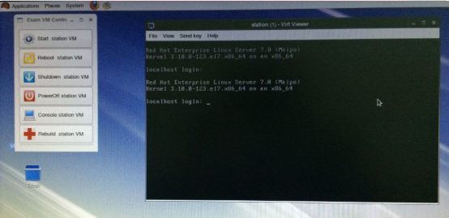

RHCSA 考试
此次考试中您将使用两个操作系统。一台是您面前的物理机桌面系统，另一台是运行在桌面系统上的已经预装了 Red Hat Enterprise Linux 操作系统的虚拟机。除非特别指出，所有的考试要求都是在虚拟机上完成。你没有 root 权限访问物理机，但你可以用物理机来测试虚拟机上要求完成的配置。
请注意，因为考试系统是一台虚拟机，所以你需要使用桌面上的 VM Console 图标来访问虚拟机。您页可以通过 SSH 从桌面系统来访问虚拟机，但是在您还没有完成相关考试要求之前，是不能通过 SSH 访问虚拟机。
请注意，在考试期间不允许和其他考生交流，也不允许尝试链接其他考生的主机。测试系统和网络都在监控之中，上述两种情况的发生会导致您考试成绩为零分。
配置信息
在您开始之前，您需要查看知道的总体配置信息：
主机名： desktop.group8.example.com
IP地址： 172.24.8.10
子网掩码： 255.255.255.0
网关： 172.24.8.254
名称服务： 172.24.8.254
您必须完成对系统密码的破解，并且根据总体配置信息完成对虚拟机网络的修改，才能继续完成考试的其余部分。点击以下链接获得考试的其余题目：考试题目
在评分之前您的系统会被重新启动，所以请您确保您所做的所有修改在重新启动之后仍然能够生效。并且您也需要知道，评分的标准是系统能不能按照题目所规定的要求正常工作。因此，如果您的网络没有启动，机器网络服务的配置是正确，也不能得分。
虚拟系统信息
如果您要访问您的虚拟系统控制台，可以点击您桌面上的“考试虚拟机控制台”图标。
在考试期间，您可以随意关闭或者重新启动您的虚拟机。你可以在虚拟机内执行这些操作，或者使用物理机来控制虚拟机。
在物理即上访问或者控制您的考试系统，你可以点击桌面上的“虚拟机控制”图标：
Start Exam VM - 如果您的虚拟机没有启动，这会启动您的虚拟考试系统。如果已经启动，那么这个选项无效。
Reboot Exam VM - 重启虚拟机。
Shutdown Exam VM - 这会关闭您的虚拟考试系统。
PowerOff Exam VM - 这个立即关闭您的虚拟考试系统。
Exam VM Console - 这会打开一个连接到您的虚拟考试系统的控制台窗口。注意，鼠标会自动进入到控制台窗口，如果需要移出鼠标，请同时按下 Ctrl + Alt 组合键。
Rebuild Exam VM - 此操作将会恢复当前虚拟机到初始状态，同时需要在弹出窗口中确认此操作。严重警告！！！所有之前在虚拟机上的操作将会丢失。请仅当您的虚拟机系统无法使用时进行此操作。 